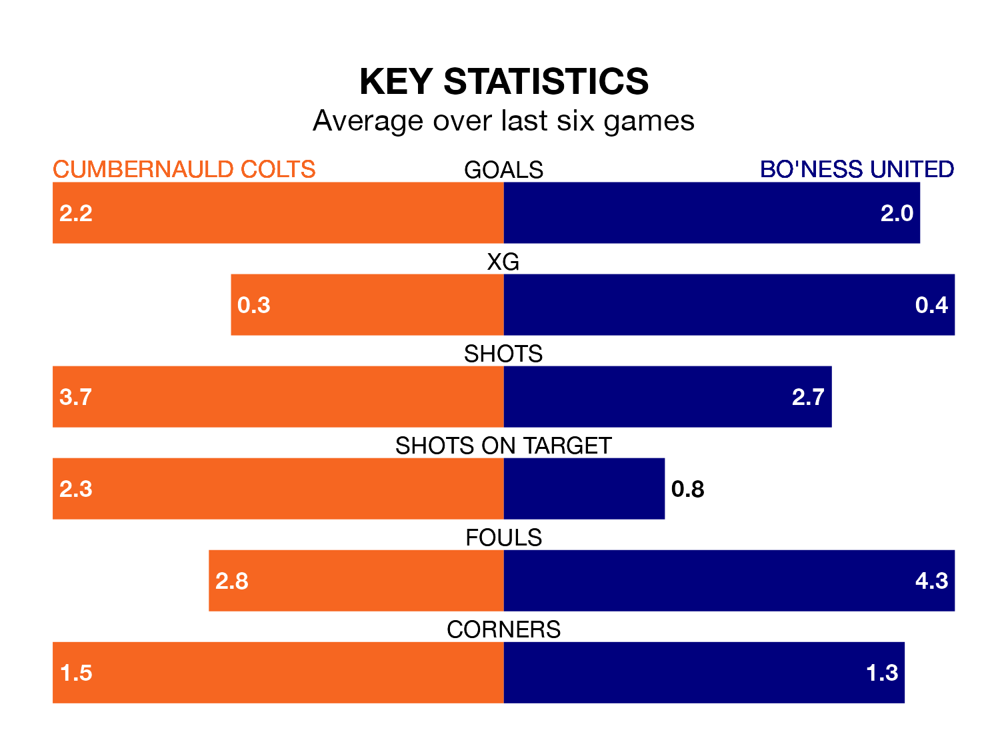

Cumbernauld Colts host Bo'ness United in Saturday's match at the Broadwood Stadium looking to bounce back from defeat last time out in Lowland Football League.
Colts, who sit second in the league after 24 games, fell to a 1-3 away defeat to Hearts U21 on January 26.
They face a Bo'ness side who also lost their last match, a 3-1 defeat to Celtic B, and who sit fourth in the table.
With 51 goals in 24 games so far this season, Cumbernauld Colts are scoring more than average in the league with 2.1 goals per game. And they are conceding fewer than average, letting in 30 goals at a rate of 1.2 per game.
Bo'ness are also above average scorers, with 2.0 goals per game, compared to a league average of 1.7. They have conceded 1.4 goals per game.
In the last 10 years, Cumbernauld Colts and Bo'ness have played each other on seven occasions. They won three each, and they drew once.
On average, Colts scored 1.4 goals and Bo'ness 1.1 in those matches.
Their last meeting was on August 26, when Cumbernauld Colts won 3-0 away.
Colts are in reasonable form in Lowland Football League, with three wins and two draws from their last six games.
With four wins and a draw over that period, United's form is slightly better – they have taken 13 points from 18, compared to the home team's 11.
Updated: 13:52 (UTC), 05/02/24